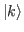
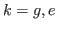
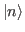
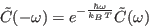
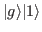
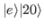
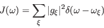

To add a single additional degree of freedom (DOF) to the system we
have to extend the working Hilbert space. The
Hamiltonian, eq. (2.7) describes a single DOF and
the corresponding Hilbert space is a vector space defined by all possible
linear combinations of vectors  and
and  Let
us imagine that we deal with a diatomic molecule which oscillates
with a characteristic frequency
Let
us imagine that we deal with a diatomic molecule which oscillates
with a characteristic frequency  . Let us assume that the
oscillations proceed irrespective of the electronic state in which
the molecule finds itself, or in otherwords, let us assume that the
oscillatory DOF of the molecule does not interact with the electronic
DOF of the molecule. One can write the Hamiltonian as a sum of the
vibrational and electronic parts
. Let us assume that the
oscillations proceed irrespective of the electronic state in which
the molecule finds itself, or in otherwords, let us assume that the
oscillatory DOF of the molecule does not interact with the electronic
DOF of the molecule. One can write the Hamiltonian as a sum of the
vibrational and electronic parts
The system is now described two sets of states. One is the set of
electronic states ,  and one is the set of vibrational
states , . To precisely describe the set
we have to specify states of both of the components. Possible states
of the system are therefore e.g.
 or

or any of the linear combinations of such states. Correspondingly,
the basis of the common Hilbertspace describing both components of
the system has to be composed of the product states
.
The components of the Hamiltonian, Eq. (2.8) are
not defined on a Hilbert space defined by the product states, but
can be easily made so by just assuming that the empty space next to
them holds a unity operator on the Hilbert space which we are missing.
One can for instance write
| (2.10) |
| (2.11) |
 |
(2.12) |
If we do not insist on writing out the vibrational Hamiltonian using
the vibrational eigenstates, we can as well write
 |
(2.13) |